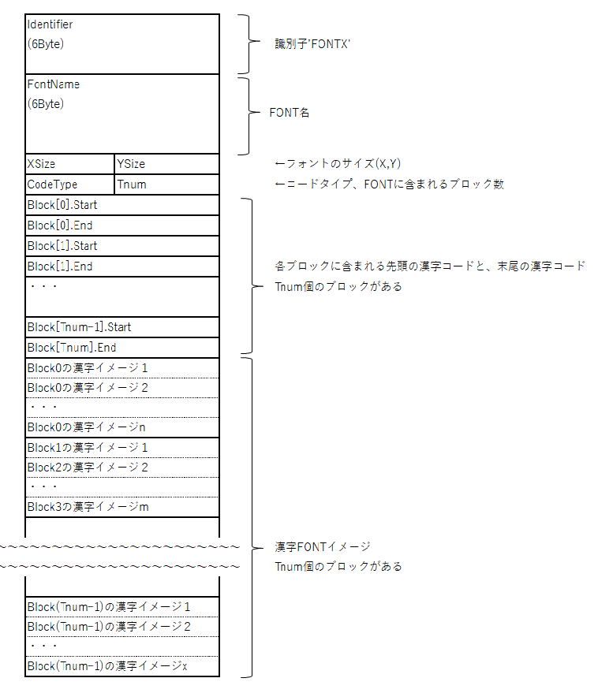
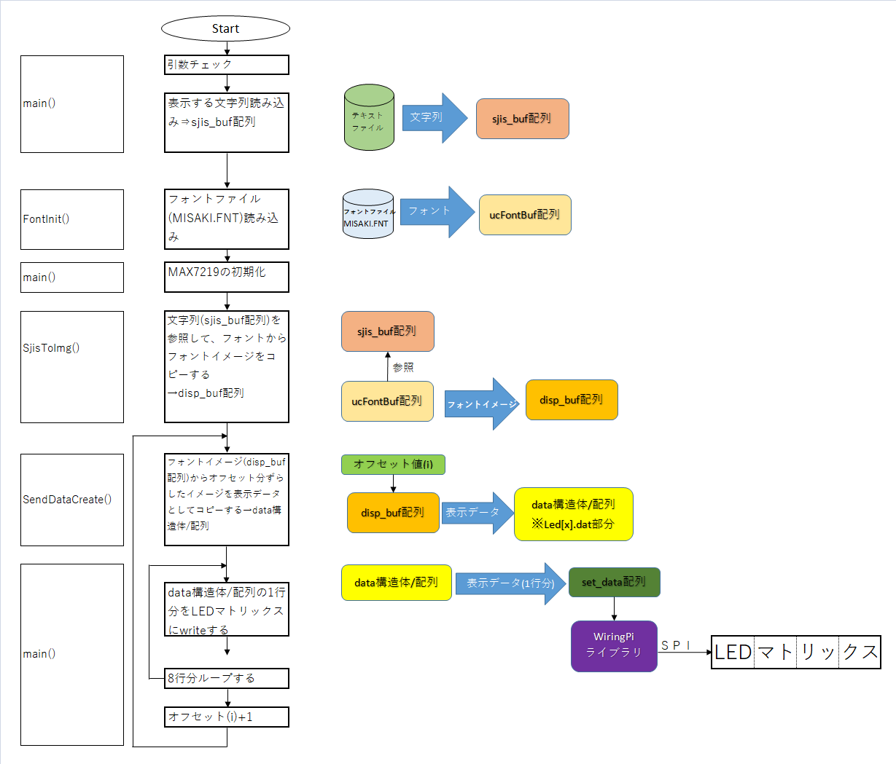

前回に引き続き、秋月電子の「MAX7219使用赤色ドットマトリクスLEDモジュール」を使用します。
今回は、予告通り漢字文字列をスクロール表示するプログラムを作りましたので、紹介いたします。
【注意事項】
Raspberry Piの設定や結線などは前回と同じです。
また、前回と同様に事前にRaspberry PiのSPI設定や、wiringPiの設定を行う必要があります。
これらの情報については、前回の記事を参照してください。
一般的な漢字フォントは本来16x16以上のドット数が必要ですが、使用しているLEDマトリックスは、8x8ドットであり使用できません。
このため、8x8ドットに対応している美咲フォント(FONTX2形式)をダウンロードして使用します。
FONTX2形式は、フォント形式の一種であり、下記の形式のヘッダ部分＋漢字イメージの組み合わせになります。
漢字イメージは、（プロポーショナルではなく、）ドットデータです。このため、ヘッダ内にフォントのサイズ情報(XSize,YSize)があります。
また、漢字コードはシフトJISです。効率化のため有効な文字コード部分の範囲をブロックとして扱っています。
下記の、Tnumがブロックの数です。そのあとに、Block[x].Start～Block[x].Endに文字コードのリストがあります。
このリスト通りにヘッダに続く漢字イメージが格納されています。
これらの情報から、各文字コードに対する、文字コードに該当するオフセット（先頭からのバイト数）を計算することができます。

上記のヘッダ部分をC言語の構造体で表現すると以下のようになります。
ソースコードは、こちらからダウンロードしてください。
ソースコードの大まかなフローを以下にまとめました。

本項では、ソースコードのコンパイルと実行について記載します。
まずは、【３】のソースコードをtest2.cとして保存してください。
次に、同じディレクトリに、以下のMakefileを保存してください。
※「-lwiringPi」が、wiringPiライブラリをリンクする指定になります。
lsコマンドで、Makefileとtest2.cがあることを確認してください。
次にmakeコマンドで、コンパイルを実施してください。
lsコマンドで、test2(実行ファイル)が作成されたことを確認してください。
美咲フォントで扱う文字コードは、シフトJIS形式です。
しかし、Raspberry PiのOSは、UNICODEであるUTF-8が標準的に使用されています。
今回の動画では、以下のテキストファイル(kanji.utf-8)を作成しました。
Raspberry Piのテキストエディタで上記テキストファイルを作成すると、UTF-8形式になります。
このままでは、今回作成したツールでは、LEDマトリックスに表示できないので、iconvという文字コード変換ツールを使用します。
下記の例では、UTF-8形式のテキストファイルkanji.utf-8から、シフトJIS形式のテキストファイルkanji.sjisを作成します。
この、kanji.sjisを実行ファイル(test2)と同じディレクトリにコピーしてください。
フォントファイルは、前記のとおり美咲フォントの「FONTX2 形式」を使用しています。
美咲フォントのHPからダウンロードした「MISAKI.FNT」を、実行ファイル(test2)と同じディレクトリにコピーしてください。
テキストファイルkanji.sjisと、フォントファイルMISAKI.FNTが、実行ファイルtest2と同じディレクトリに存在することを確認してください。
実行は以下のように入力してください。
実行を止めるときは、[CTRL]+[C]キーを押してください。
【改訂記録】
2019/06/15版：公開
2026/03/22版：リンク切れ修正、レスポンシブ対応